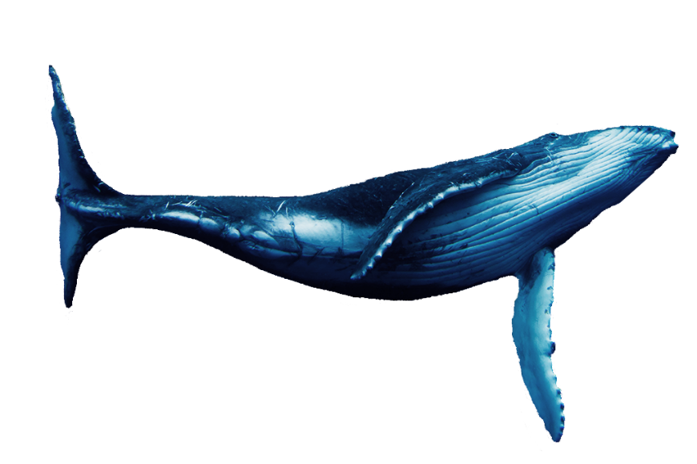
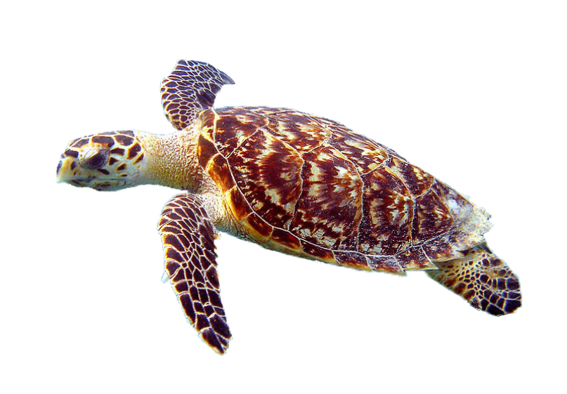
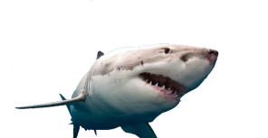

BALEIA
Como espécies de vida longa, as baleias são
protetoras do ecossistema por aumentar a previsibilidade
e estabilidade destes. Ao se alimentarem de uma grande
diversidade de peixes reduzem suas populações a níveis
intermediários, moderando a competição entre essas espécies
e impedindo que alguma dessas espécies domine o ambiente e reduza
assim a biodiversidade. Algumas estimativas apontam que a população
mundial de baleias-azuis hoje é apenas 2-5% da população histórica
antes da caça. Maior animal do planeta, a baleia-azul pode pesar
mais de 180 toneladas, e medir até 30 metros. O animal está
ameaçado de extinção, tendo sido alvo de caça predatória durante
várias décadas. Acredita-se que mais de 200,000 baleias-azuis
tenham sido mortas. As maiores baleias do mundo são mais do que
meras maravilhas evolucionárias. Ao remover o carbono do oceano,
elas podem ajudar a humanidade a combater as mudanças climáticas
- um serviço ecossistêmico que pode valer milhões de dólares por
baleia, de acordo com uma nova análise feita por economistas do
Fundo Monetário Internacional (FMI).

TARTARUGA
Existem cinco espécies de tartarugas marinhas atualmente no Brasil.
E, infelizmente, todas elas estão em extinção. Embora sua pesca
esteja proibida por lei federal, são comuns os casos de
tartarugas-do-mar que se enroscam acidentalmente nas
redes dos pescadores e morrem. E as dificuldades não param
por aí: como muitos de seus ovos são comidos por predadores,
calcula-se que apenas uma ou duas tartarugas em cada 1000
cheguem à idade adulta.

TUBARÃO BRANCO
Considerado o maior peixe predador, em termos de tamanho,
o tubarão-branco pode chegar a 7,51 metros e pesar cerca de 2,5
toneladas. Ele é encontrado em todos os oceanos e é protegido
em vários países. O maior risco a esses animais é a pesca
esportiva. Apesar de atacar muitos surfistas, ele não é um
predador de humanos. A sua alimentação é baseada em focas,
leões-marinhos, golfinhos, tartarugas e elefantes-marinhos.
O tubarão-branco é considerado o topo da cadeia alimentar dos
oceanos, sendo, portanto, extremamente importante para esse
ambiente, pois atua controlando a população de suas presas,
o que evita, consequentemente, que ela aumente de forma exagerada.